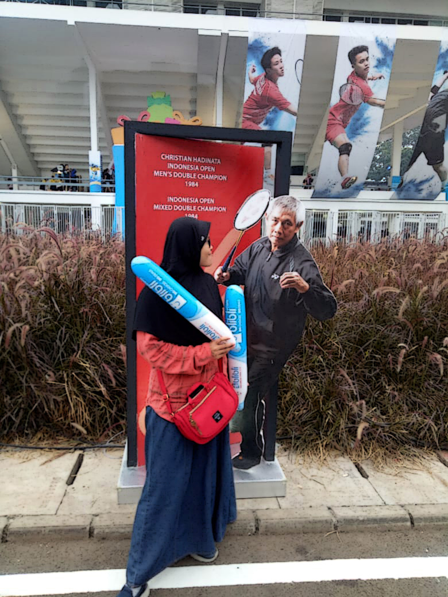
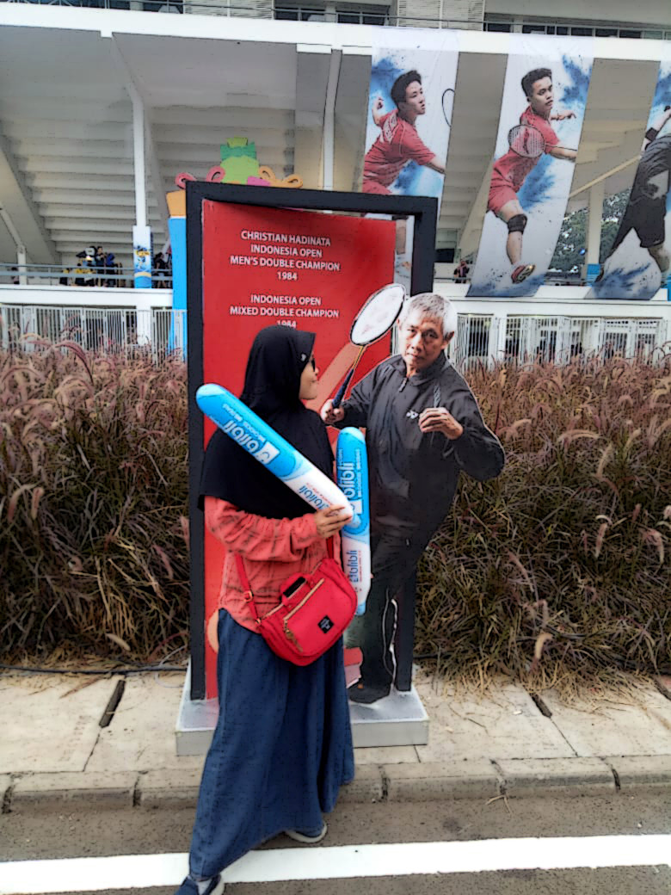
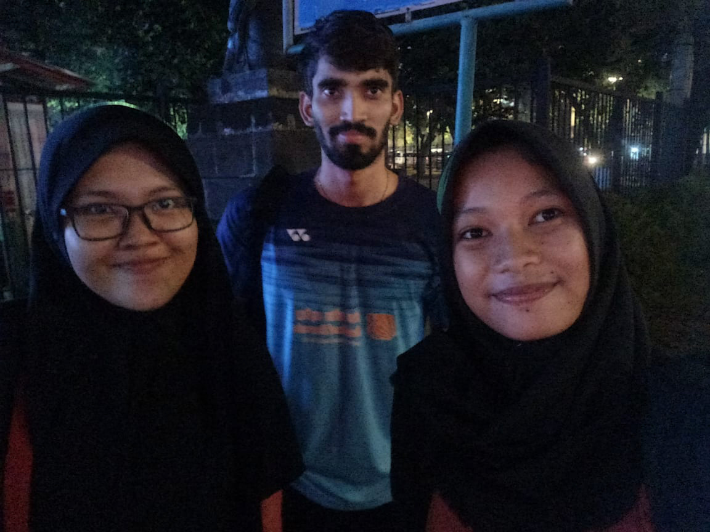
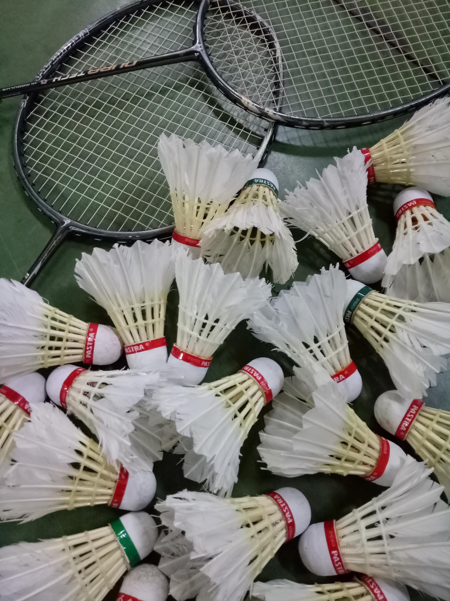
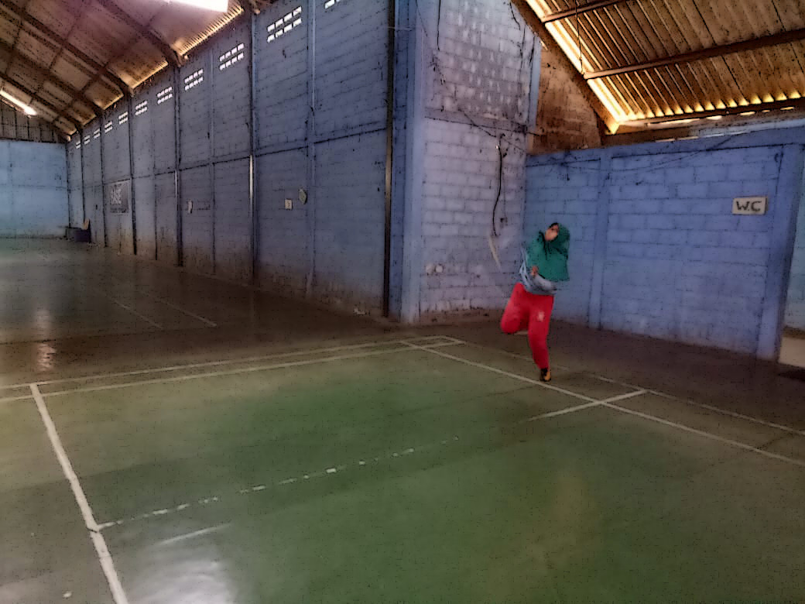
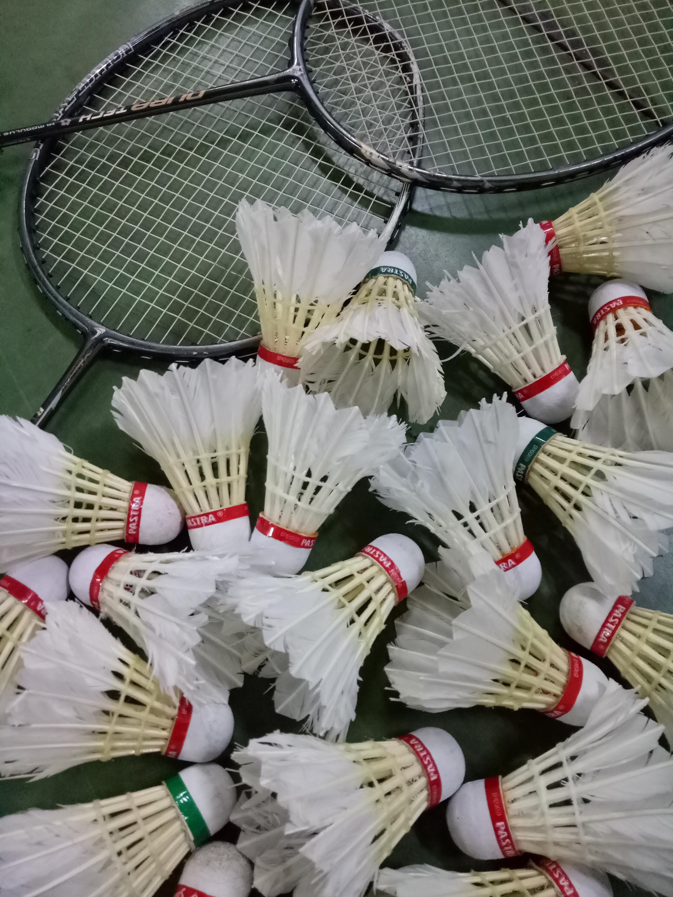
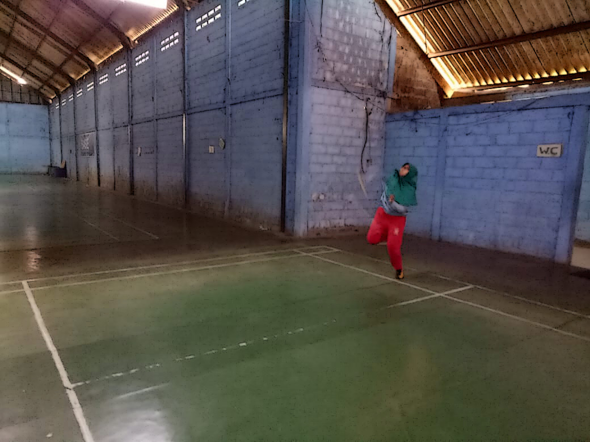
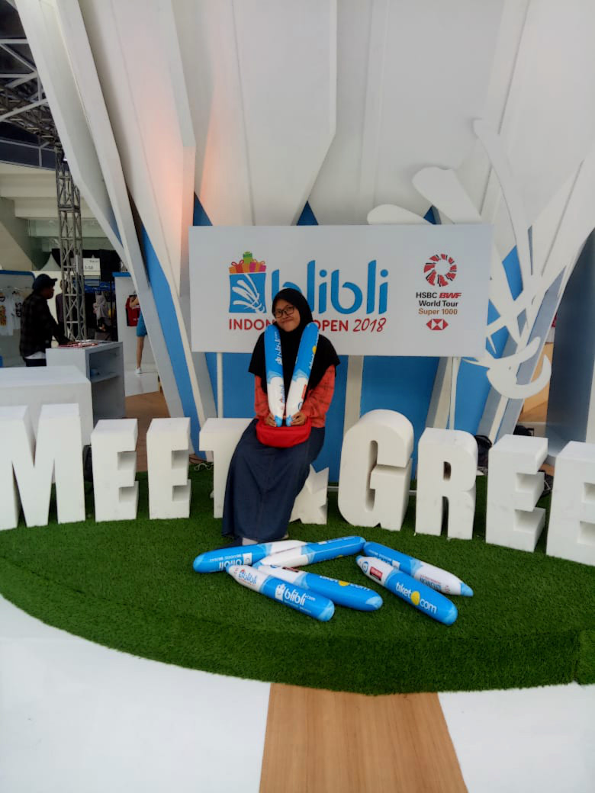
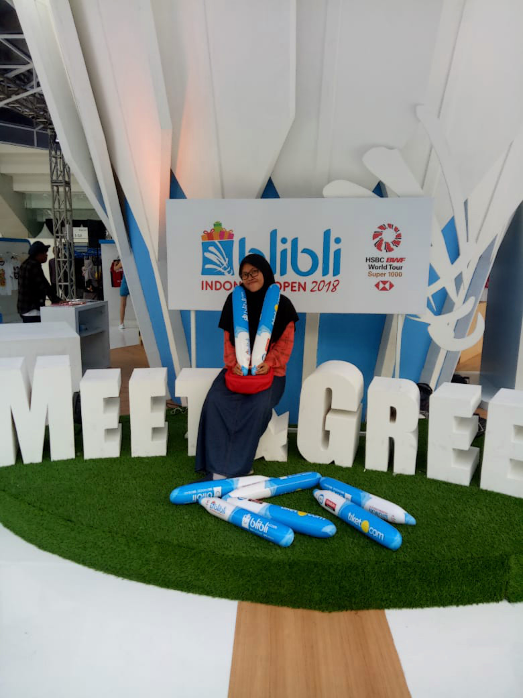

A B O U T M E
Assalamualaikum gaes,
Lemme introduce my self!

My name is Qotrunnada Linggar Pinanditi, you can call me Nada or Qotrun or whatever u want that makes me turn my head.
Like the picture above, I'm very beautiful, right? Yes, I have been aware since I was a baby HAHAHAH.
I'm from crowded city. Everyone must know. It's Jekardah.
I have a super dad, strong mom, and annoying brother. I love them so much, more than they love me :)
I study in Bogor Vocational High School of Chemical Analyst or people usually called it as SMAKBO (sekolah membuat aku kurang bobo. lol.)
SMAKBO'S students aren't what you think, like uncommunicative, "Kutu Buku", and manymore
I'm so excited to go to the school, because I can receive money and also I want to see doi MWEHEHE.
I'm a crazy person and I'm so proud of it. But, all of my weird friends are crazier than me HAHAHA.
For the example is like the gif below,
75% reasons why I like to go to school, because I can do anything, especially positive activity. I can play, laugh, and feel happy YEAAYYY.
Only 25%, I go to school because I want to study WOKWOKWOK

M Y I D O L A
As you've known, he is Indonesian badminton athlete that has many fans, especially from "Kaum Hawa"
Unfortunately, I've never met him HUHUHU :'( I hope, I can meet with him wherever and whenever it is at unexpected times ASAP AAMIIN AAMIIN.
Rn, I can only look at him through photos or 3D Picture, like the picture below. So sad:(
But, I've seen some of my idol, when I watched the Blibli Indonesia Open 2018 at Istora Senayan.
 
 


M Y H O B B Y A N D M Y G A L L E R Y
Every week, I've 2 days to get holiday on the weekend. I use it for sport time like badminton.
It is a time I spend a holiday to refresh my body, my soul, and my brain from many tasks and homeworks.
Well, I love every sport, they're all fun and hard to pick. But, my favorite is Badminton.
Badminton is a good thing to do because you can feel healthy and happy.
It is a time I spend a holiday to refresh my body, my soul, and my brain from many tasks and homeworks.
Well, I love every sport, they're all fun and hard to pick. But, my favorite is Badminton.
Badminton is a good thing to do because you can feel healthy and happy.
  
 
I'm in love with badminton, when I was in elementary school.
Also, I like watching some of badminton championship where it's held in Indonesia, like Indonesia Open, Indonesia Master, Djarum Superliga, and manymore.
There, I will feel happy and forget the burden for a moment, like "someone" who already has "someone" HAHAHAHA

 
